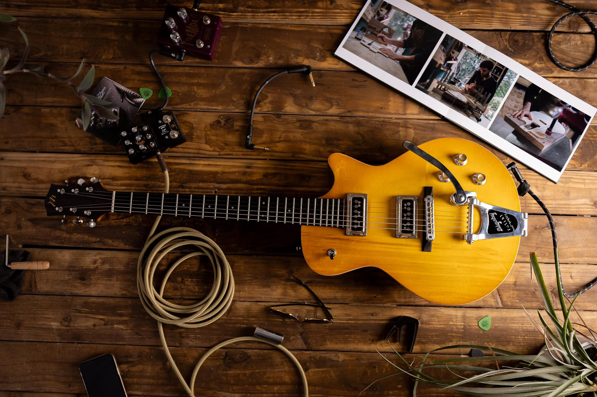

Choisis d'abord l'ambiance couleur (indépendamment des polices). Chaque palette a son caractère et son archétype. Ensuite, regarde les polices (étape 2), puis combine tout dans le générateur (étape 3) pour voir le résultat sur les 3 écrans. Les mini-aperçus ci-dessous donnent l'ambiance couleur (en police par défaut).
AL'atelier sous la lampeL'instrument fini sur un noir laqué, sous une seule lumière chaude. Dramatique, haut de gamme : l'or rappelle le vernis et l'érable.

Guitare électriqueThe Black Cherry
À partir de 4 200 €DynasonicDemander un devis
Archétype
Luxury / Premium Brand — « black + gold »
Force / risque
Imbattable en cover immersif. Risque : « luxe générique » plus que « métier ».
Contraste
Crème #ECE3D1 / laque #14100D ≈ 14:1AAA
Laque#14100D
Épicéa#ECE3D1
Érable (or)#C9A24B
Palissandre#6B4A33
Cerise#7A2230
BLe plan du luthierLe dessin technique de l'atelier : papier chaud, traits fins, cotes de mesure. La précision comme esthétique. Angles vifs.
Guitare électriqueThe Black Cherry
À partir de 4 200 €DynasonicDemander un devis
Archétype
Architecture / Studio — « monochrome + blueprint »
CLa laque signatureLa couleur du vernis comme identité, mais sobre : un cerise profond et mat (la Black Cherry), accents laiton, formes douces. Version immersive (tout le site sur cerise sombre).
Guitare électriqueThe Black Cherry
À partir de 4 200 €DynasonicDemander un devis
Archétype
Brewery / Winery (craft) — « burgundy + gold »
Force / risque
Identité forte et distinctive. Risque : tout-sombre = pages de texte plus lourdes.
Contraste
Crème #F3E6D8 / cerise #3A2228 ≈ 11:1AAA
Cerise mat#3A2228
Cerise clair#4A2E34
Laiton#E2A93C
Palissandre#6B4A33
Crème#F3E6D8
DLa synthèse★ RecommandéeL'âme de C (cerise + laiton) sur une base claire chaude pour la lisibilité, avec le cover sombre de A. La piste la plus équilibrée : chaleureuse, lisible et premium.
Guitare électriqueThe Black Cherry
À partir de 4 200 €DynasonicDemander un devis
Composition
C (âme) + base claire + cover sombre de A
Force
Base claire = pages de texte lisibles ; cover sombre = guitares qui ressortent. La plus polyvalente.